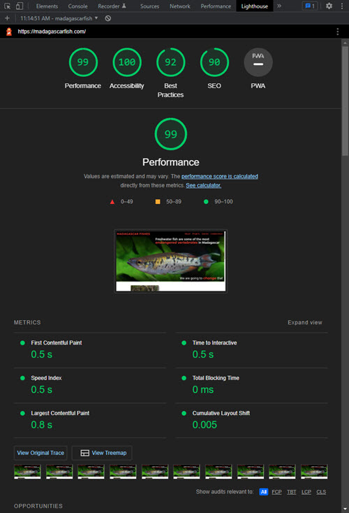

Madagascar Fishes
Acting as a resource for ichthyologists, conservation professionals, and enthusiasts.
The Madagascar Fishes website (madagascarfish.com) is a long running passion project of mine. The freshwater fish of Madagascar was the main conservation focus of my previous career. I continue to be active in efforts to preserve these species in their natural habitats.
This website has been a way for me to combine a passion for Software Engineering, an interest in design, and a dedication to animal conservation.

Technology Used
The philosophy behind the Madagascar Fishes website is to provide information to ichthyologists, conservationists, and enthusiasts. As such, I wanted the site to be responsive and performant. To achieve those goals I kept the majority of the site as simple HTML and CSS. JavaScript, where it is present, assists with the MapBox integration on the species, collection site, and research pages.
Using Google lighthouse helped me problem solve which resources were blocking a timely load. In earlier iterations of the site both First Contentful Paint and Largest Contentful Paint were extremely slow on 3G systems for the home page.
Using the picture element, srcset, and .webp formats helped decrease the time taken to paint the hero-image, greatly speeding up the site. This has also allowed compatibility with older browsers which are still common in Madagascar.
Further into the site architecture I've stuck to CSS only functionality to add tabs and cards. My goal was to have a modern feel to the site and interactivity to aid in navigation, while keeping the experience and functionality of site pleasant for users on slower connections.
Lessons Learned
I learned a few things during the initial stages of developing the Madagascar Fishes Website:
- Frameworks, templates, and content management systems would make this static site easier to code and maintain.
- This was my first experience with writing my own CSS variables and utility classes, and keeping them organized
- While JavaScript is fun, you can provide much of the same functionality with CSS on the front-end
- The A11y Project website brought to light a lot of misconceptions I had about how some people experience the internet. Putting in the work to improve the accessibility of the site was a challenge, and there is much more I could do to improve that aspect moving forward.
Site Development
The amount of information surrounding the fish of Madagascar, their conservation programs, and the collaborators working for their continued survival is immense. As such the site is in a continual state of development. Goals currently are:
- Present information on the majority of "common" species.
- Present information on the key conservation programs currently active.
- Present information on the collaborators that wish to be featured on the site.
- Enable fundraising through a third-party site (most likely Kindest.com)